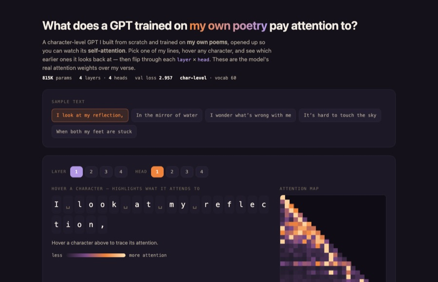
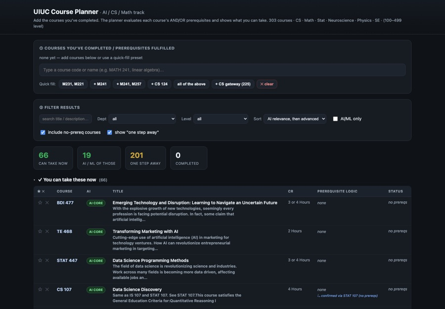
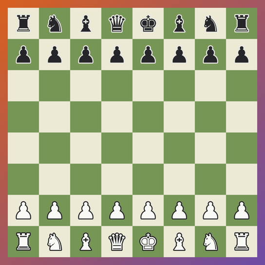
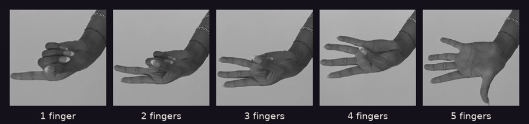

Other experience
A bit more about me: side builds, clubs, and things from before Illinois.

Now at Illinois
- CUBE Consulting software engineer
- Disruption Lab software engineer
- Quant @ Illinois software division


Turing Test for art
Credo AI · Sept 2025
Visitors at Credo AI’s Agents of Trust Summit tried to tell my oil paintings from AI-generated replicas.
try it in the studio →
Teaching
180K+
views on my YouTube tutorials teaching beginners to build apps with low-code tools.

Before Illinois
- 1st place, Bubble.io hackathon youngest of 150+
- President, CareerConnect 13 company visits

Worked & shown at